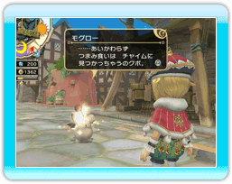
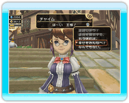
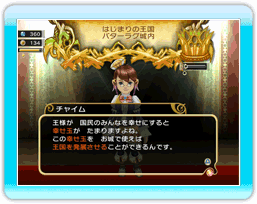

24 |
幸せ度 |
 |
王様が街を歩いている人々と会話をすると、住民がキラキラと輝くことがあります。 これは王様との会話によって住民が幸せになった状態で、住民がキラキラ光るたびに 国民がどれだけ幸せに暮らしているかを示す「幸せ度」が、画面左上のゲージにたまっていきます。 人々との会話のほかにも、住民がパン屋や商館でちょっといい買い物をしたり、国民の悩みを解決したりすることでも、幸せ度はたまっていきます。 この幸せ度がゲージいっぱいになると、翌日の税収に臨時ボーナス（幸せボーナス）がつくほか、「幸せ玉」をひとつ獲得することができます。さらに、王様はこの幸せ玉を消費して、王国全体に良い影響をもたらす魔法を使うことができるのです。 一度に持てる幸せ玉の数は、パン屋や商館を建てると増えていきます。 |
●幸せ玉の使いみち ・幸せをふりまく 幸せ玉を持っている状態でチャイムを呼ぶと、その時持っている幸せ玉を消費して、幸せを国民に分け与えることができます。この状態で、街を歩いている住民と話をすると家庭が円満になったり、冒険者に話しかけると冒険者の能力が一時的に上がったりするなど、国民に良い影響をもたらすことができます。 ・幸せ玉をお城で使う 幸せ玉をお城の中で一定数使うと、王国そのものを発展させることができます。 王国が発展すると、新しいおふれが出せるようになったり、国民の悩みを聞くことができるようになります。王様が国民の悩みを解決してあげれば、さらにまた幸せを増やすことができます。 他にも、王国の発展は街にいろいろな変化を起こしますので、どんどん幸せ玉を使ってみましょう。 |
●幸せフィーバー！ 冒険者がダンジョンで目的を達成すると、少しの間幸せ度がたくさん上がる状態になります。この状態になったら積極的に住民と話をして、たくさん幸せ度を貯めましょう。 |
 |
 |
 |